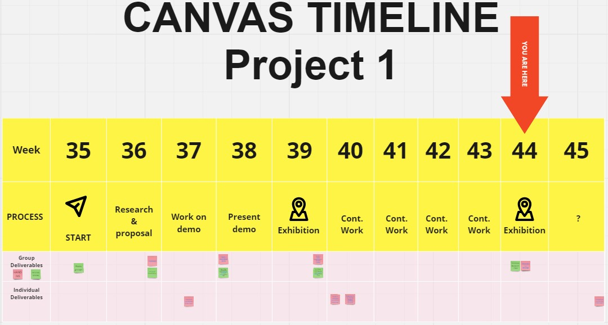

Room For Sound?
Project work in Advanced Graphics and Interactions - masters's course - Graded A

Platform
Meta Quest 2
Tools used
Unity, Arduino
Duration
10 weeks
Team Size
5
Roles
Proj. Manager, VR & Arduino Developer
In short
Room For Sound is a prototype of a VR concert held hybridly online and physical. We implemented a few musical instruments, songs to play along to, and audience members being able join the virtual world with avatars using their smartphones.
This was one of two group projects during an intensive master's course in advanced graphics and interactions, intended to put to test what we had learned during our master's program.
Check out the website showcasing the project: https://roomforsound.framer.website. You can read more about my personal contribution below.
The situation
The design brief gave us free reign in deciding what to do as long as it was innovative and presentable as a museum exhibition in 3 months. After initial brainstorming, our group quickly decided to work on a musical experience in VR. Our teacher suggested we also find a way to include an audience, thereby, making it a shared experience between several than just for one.
Brainstorming on the online whiteboard Miro.
Target
As a developer I aimed to make a physical drum pedal controller for the virtual drum set we were creating (which was something early playtesters said they wanted). As the project manager I aimed to keep the group on the same page both in terms of vision and ambition level, both in terms of grades and quality of the product.
Action
I set up a Discord server and Miro board where all information and resources were collected, and communication were held I chose these tools as the group was familiar with them. I proposed dates for both physical and remote meetings, guided the topics of the meetings, and made sure they were documented.
Project timeline I made for the group.
As a developer I made sure that the Meta/Oculus Quest 2 framework and plugins were working. It contained pre-fabricated tools for hand-tracking and interactions with the controllers. Otherwise, I spent a lot of time researching and implementing foot pedals that would interface with the Quest 2. I had an Arduino board and began experimenting with it. I wanted the foot pedal to interface wirelessly with the Quest 2 and be easy to use as a potential product for sale. My research boiled down to using a Bluetooth module, on the Arduino, that was HID (Human Interface Device) compliant. Meaning that the device could be automatically recognized as a gaming controller. This helped the development as well, as Unity can easily find HID devices and there is no extra code we had to write. An alternative wireless data transfer protocol was a UDP/TCP websocket between the Arduino and Quest 2, but that would make the usage less user-friendly and required us to write more code.
Result
The group appreciated my work as a manager and I believe helped keep the team working ambitiously. A testament being the teacher's comment on our Hello World Demo (HWD): "Your HWD is historic already. Excellent work! It is one of the most entertaining and comprehensive HWDs we have every had in 11 years of AGI [the course]. Feel the pride!".
The application was also exhibited at the Swedish National Museum of Science and Technology for a day and was very popular among kids.
A working prototype of the foot pedal was finished. We could theoretically attach any number of pedals to the Arduino board. The pedals I had were only binary in their data, either on or off, but theoretically we could have used analog data and register how hard the foot pedal sound should be etc. I had not worked with such hardware development earlier and was intentionally out of my comfort zone. I managed to reach my target with a working prototype and learned a lot along the way; about Arduino, HID, Bluetooth etc. Just after this project I had use for these skills in a another course, requiring me to develop a 'touch sensitive fabric' sending data via Bluetooth to a computer.
The drum pedal prototype, connected via Bluetooth to the Quest 2.
Reflection
I learned that, for me, project management takes a lot of time if I do not have pre-set ways of doing things. Keeping information in written form is important as it is impossible to keep track of things in my head. In future projects I will continue to try to document as much as possible.
Learning about the workings of the HID protocol was very useful and helped me understand more how controllers works. During my master's project I had to interface joysticks with Unreal Engine, and Unreal was a lot worse than Unity in this regard. Knowledge I had gained in creating these drum pedals, helped me to faster find solutions to problems in my master's project.